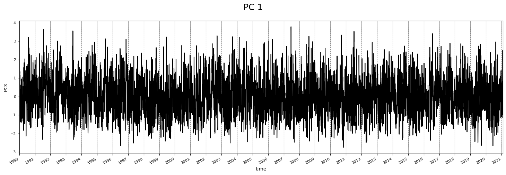
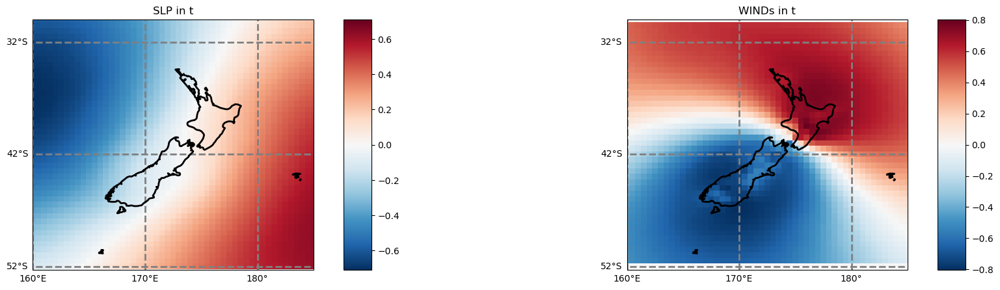
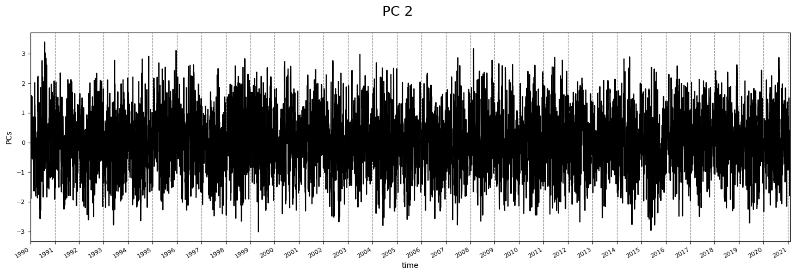
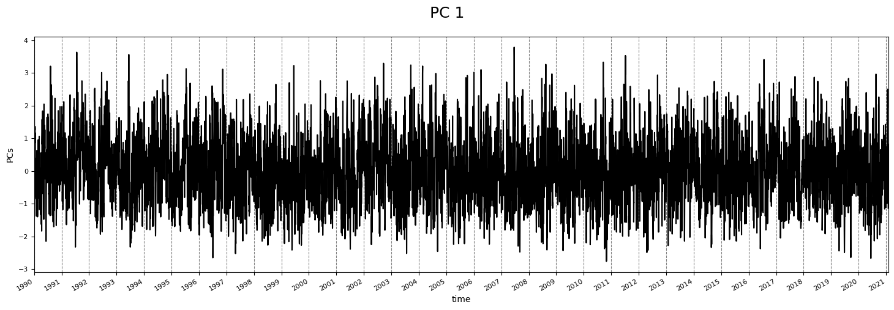
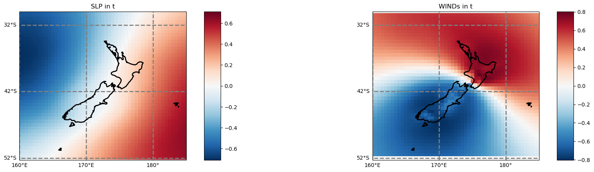
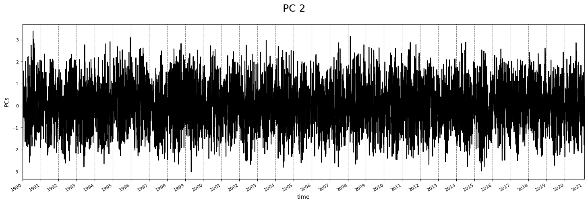

5. MultiLinear regression models¶
5.1. Linear regression theory¶
We assume here that \( y | X ; \theta\sim\mathcal{N}(\mu,\sigma ^2)\) !!
Normal equations - By noting \(X\) the design matrix, the value of \(\theta\) that minimizes the cost function is a closed-form solution such that:
LMS algorithm - By noting \(\alpha\) the learning rate, the update rule of the Least Mean Squares (LMS) algorithm for a training set of \(m\) data points, which is also known as the Widrow-Hoff learning rule, is as follows:
Note
Remark: the update rule is a particular case of the gradient ascent
LWR - Locally Weighted Regression, also known as LWR, is a variant of linear regression that weights each training example in its cost function by \(w^{(i)}(x)\), which is defined with parameter \(\tau\in\mathbb{R}\) as:
Assumptions of GLMs - Generalized Linear Models (GLM) aim at predicting a random variable \(y\) as a function of \(x\in\mathbb{R}^{n+1}\) and rely on the following 3 assumptions:
Tip
Remark: ordinary least squares and logistic regression are special cases of generalized linear models
Below, a sketch of how a linear regression model can be is seen:
{kind=link}
Fig. 5.1 This is a sketch of a linear model, where just one independent variable predicts the target variable Y, based on the Least squares method¶
# basics
import os, sys
import progressbar
# arrays
import numpy as np
import pandas as pd
import xarray as xr
# maths
from sklearn.preprocessing import StandardScaler
from sklearn.linear_model import LinearRegression, ElasticNet
from sklearn.decomposition import PCA
# plotting
import matplotlib.pyplot as plt
import cartopy.crs as ccrs
# append sscode to path
sys.path.insert(0, os.path.join(os.path.abspath(''), '..'))
# custom
from sscode.config import data_path, default_region_reduced, default_evaluation_metrics
from sscode.data import Loader, load_moana_hindcast_ss, load_private_tgs
from sscode.utils import calculate_relative_winds
from sscode.pca import PCA_DynamicPred
from sscode.linear import MultiLinear_Regression
from sscode.plotting.utils import plot_ccrs_nz
from sscode.plotting.data import plot_uhslc_locations
# warnings
import warnings
warnings.filterwarnings('ignore')
# this is to allow plots to be centered
from IPython.core.display import HTML
HTML("""
<style>
.output_png {
display: table-cell;
text-align: center;
vertical-align: middle;
}
</style>
""")
DATA PATH /home/javitausia/Documentos/geocean-nz-ss/data
5.2. Load the data (main + PCs)¶
As always, we load the three used datasets, which are the Moana v2 hindcast nearshore, the CFSR sea-level-pressure fields and winds (u10 and v10) and the UHSLC tgs validators, again setting the plot parameter to False.
Moreover, we will load the previously calculated regional PCs, as it takes some time to calculate them. Have in mind that principal component analysis involves “difficult” matrices multiplications / inversions, and with the regional slp fields + the gradient, we have thousands of variables!!
# load the data
load_cfsr_moana_uhslc = Loader(
data_to_load=['cfsr','moana','uhslc'], plot=False,
time_resample='1D', load_winds=True, location=None
)
loading the sea-level-pressure fields...
loading daily resampled data...
loading the Moana v2 hindcast data...
loading and plotting the UHSLC tidal guages...
# load / calculate the pcs
if os.path.isfile('../data/cfsr/cfsr_regional_gradient_tl3_daily_pcs.nc'):
pcs_cfsr = xr.open_dataset(
'../data/cfsr/cfsr_regional_gradient_tl3_daily_pcs.nc'
)
from sscode.plotting.pca import plot_pcs
# plot_pcs(pcs_cfsr,n_plot=1,pca_ttls=['SLP in t','Gradient in t'])
else:
# calculate the pcs
pcs_cfsr, pcs_scaler = PCA_DynamicPred(
load_cfsr_moana_uhslc.predictor_slp,
calculate_gradient=True, # no winds but the gradient will be used
time_lapse=3,time_resample='1D',
pca_plot=(False,False,2)
)
5.3. Linear regression with regional predictor¶
In the following cell, a multilinear regression is performed over all the domain of the Moana v2 hindcast nearshore, having the regional pcs (slp + gradient) as the predictor. Moreover, we plot the obtained results, which are also saved in our data/statistics folder, with the name stats_lm_regional_daily.nc.
Note
As it can be seen in the results plot, the different shores in New Zealand show very different results
run = False
if run:
# perform the Multilinear-Regression (regional)
metrics_regional = [] # save regional metrics
pcs_to_use_regional = [] # save used pcs (f-regression)
sites_regional = np.arange(
0,len(load_cfsr_moana_uhslc.predictand.site.values),1
)
# perform the MultiLinear regression over all the sites
for site in progressbar.progressbar(sites_regional):
ss_moana = load_cfsr_moana_uhslc.predictand.sel(site=site)\
.load().resample(time='1D').max()
metrics, model, pcs_to_use = MultiLinear_Regression(
pcs_cfsr, ss_moana # use default attributes
) # using the regional-pre-loaded pcs
metrics_regional.append(list(metrics.values())) # save site metrics
pcs_to_use_regional.append(pcs_to_use) # save used pcs
# now, save all in xarray.Dataset
sites_metrics_regional = {}
for im,metric in enumerate(metrics.keys()):
sites_metrics_regional[metric] = (('station'),np.array(metrics_regional)[:,im])
sites_metrics_regional['latitude'] = (
('station'),load_cfsr_moana_uhslc.predictand.sel(site=sites_regional).lat.values
)
sites_metrics_regional['longitude'] = (
('station'),load_cfsr_moana_uhslc.predictand.sel(site=sites_regional).lon.values
)
# save the metrics
metrics_dataset_regional = xr.Dataset(
sites_metrics_regional,coords={'station':sites_regional}
)
# local copys
if False:
metrics_dataset_regional.to_netcdf(
data_path+'/statistics/models/stats_lm_regional_daily_new.nc'
) # save metrics in all the stations
np.save(
data_path+'/statistics/models/pcs_lm_regional_daily_new.npy',
np.array(pcs_to_use_regional)
) # save pcs used in the linear regressions
else:
metrics_dataset_regional = xr.open_dataset(
data_path+'/statistics/models/stats_lm_regional_daily.nc'
)
# plot results
if True:
from sscode.plotting.validation import plot_stats
plot_stats(metrics_dataset_regional,plot_stats=['rel_rmse','pearson','si'])
pcs_to_use_regional = np.load(
data_path+'/statistics/models/pcs_lm_regional_daily.npy',
allow_pickle=True
)
max_pcs = max([np.max(array) for array in pcs_to_use_regional])
pcs_importance = np.zeros((len(pcs_to_use_regional),max_pcs))
for i,array in enumerate(pcs_to_use_regional):
for pc in range(max_pcs):
try:
pcs_importance[i,pc] = (max_pcs-np.where(array==pc)[0])/max_pcs
except:
continue
fig, ax = plt.subplots(figsize=(20,10))
pcol = ax.pcolor(pcs_importance.T[:50,:],cmap='Spectral')
fig.colorbar(pcol)
ax.set_yticks(np.arange(0,50,5)+0.5)
ax.set_yticklabels(np.arange(0,50,5)+1,fontsize=16)
ax.set_xticks(np.arange(20,len(pcs_to_use_regional))[::50]+0.5)
ax.set_xticklabels(np.arange(
20,len(load_cfsr_moana_uhslc.predictand.site.values),1
)[::50],fontsize=16)
plt.setp(ax.get_xticklabels(),rotation=45,ha='right')
plt.show()
Tip
Images generated by code, as the one above, can be easily open in a new window with the right click, as they have all been generated with good quality for this particular purpose!!
5.3.1. Linear regression in the UHSLC tidal gauges + validation¶
Here, we really use for the first time our “validators”, which are the main truth in the project. In coastal engineering, we usually use the buoys (if we are working with waves) and the tidal gauges (water elevation) as the real observations, and once they are processed, which is the case of these nodes shown here, they might be used as the data to validate with.
Below, apart from plotting the location of the different tidal gauges that we will be working with, we show how the linear regression with the regional predictor behaves in the nearest locations to the tidal gauges, and how this pre-trained linear regression model performs in that tidal gauge too.
To understand how good or bad the linear model might behave when predicting the storm surge of the tidal guages, we find the answer in the validations we performed in the first notebook, called Data visualization and validation (data_visualization.ipynb), where the comparison of all the tidal gauges and the nearest moana nodes is shown.
Warning
This use of the pre-trained linear model with the moana nodes for the tidal gauges must be revised, as the distances between both locations might involve the appearance of new physical phenomena!!
# plot the uhslc tidal-gauges locations
plot_uhslc_locations(load_cfsr_moana_uhslc.validator)
# validate model with tgs
stats = []
# select sites and append closest to UHSLC tgs
clos_to_uhslc = [689, 328, 393, 1327, 393, 480, 999, 116, 224, 1124, 949, 708]
for istat,stat in enumerate(clos_to_uhslc):
ss_moana = load_cfsr_moana_uhslc.predictand.sel(site=stat)\
.load().resample(time='1D').max()
stats_stat, model, pcs_to_use = MultiLinear_Regression(
pcs_cfsr, ss_moana, plot_results=True, verbose=True,
validator=(
True,load_cfsr_moana_uhslc.validator.isel(name=istat),'ss'
)
)
389 PCs (0.95 expl. variance) will be used to train the model!!
A forward selection will be performed...
where 111 PCs : [ 6 1 5 3 11 4 8 21 7 0 24 29 25 19 114 15 16 50
13 14 122 142 119 59 33 99 85 12 37 20 90 54 115 89 42 68
98 172 111 113 84 48 173 87 96 176 186 208 139 22 261 27 77 121
174 244 36 110 213 28 71 220 97 57 188 265 39 58 329 130 61 2
95 330 104 236 296 30 333 323 44 166 38 203 64 26 318 72 385 62
124 78 109 273 103 189 127 10 233 32 256 135 347 35 117 187 341 129
282 175 81],
will be finally used to train the model!!
Data comparison is -- BIAS: -0.00, SI: 0.49, Relative - RMSE: 0.25
and Correlations (Pearson, Rscore): (0.85, 0.72)
R score: 0.72 -- in TEST data
389 PCs (0.95 expl. variance) will be used to train the model!!
A forward selection will be performed...
where 99 PCs : [ 1 6 4 7 3 5 11 8 28 10 25 12 24 9 22 21 18 14
50 15 20 81 31 63 67 114 142 85 68 123 2 13 54 16 23 35
32 220 46 45 278 84 329 256 49 76 113 115 17 170 77 0 261 111
313 134 58 196 62 157 96 283 249 318 149 166 363 41 19 110 119 47
122 185 64 59 108 152 188 330 33 69 94 204 181 286 65 57 102 385
139 173 103 156 209 333 53 143 172],
will be finally used to train the model!!
Data comparison is -- BIAS: -0.01, SI: 0.55, Relative - RMSE: 0.28
and Correlations (Pearson, Rscore): (0.82, 0.66)
R score: 0.66 -- in TEST data
389 PCs (0.95 expl. variance) will be used to train the model!!
A forward selection will be performed...
where 116 PCs : [ 3 6 1 0 5 11 21 8 24 19 16 15 50 122 59 142 20 37
25 9 48 10 139 32 172 40 22 33 121 26 38 129 114 46 60 99
27 14 86 85 90 72 179 176 68 54 213 113 62 235 336 111 87 64
66 286 119 78 61 273 98 58 379 133 291 181 385 29 216 369 347 265
237 166 194 2 97 374 218 198 345 67 76 190 127 47 267 257 45 7
196 115 301 200 145 104 268 42 173 150 18 308 318 88 280 201 323 147
103 63 143 43 365 53 298 299],
will be finally used to train the model!!
Data comparison is -- BIAS: -0.00, SI: 0.48, Relative - RMSE: 0.23
and Correlations (Pearson, Rscore): (0.86, 0.74)
R score: 0.74 -- in TEST data
389 PCs (0.95 expl. variance) will be used to train the model!!
A forward selection will be performed...
where 156 PCs : [ 8 5 13 6 10 0 7 12 4 22 9 27 36 29 115 16 17 30
93 21 20 191 121 50 223 3 45 225 63 118 69 46 154 65 67 88
2 58 83 81 51 102 19 60 166 57 11 40 49 38 142 247 310 169
120 284 367 198 61 75 245 76 1 211 233 281 122 109 369 33 91 25
94 237 39 106 108 44 90 325 101 99 181 190 147 205 131 144 152 185
55 385 347 123 26 92 127 112 165 130 54 254 43 37 230 47 212 100
116 340 35 14 194 379 114 164 365 82 242 332 345 188 286 303 295 298
374 240 383 282 153 300 159 262 249 248 320 70 73 388 235 259 135 323
42 138 387 157 250 270 232 161 41 160 314 111],
will be finally used to train the model!!
Data comparison is -- BIAS: -0.00, SI: 0.58, Relative - RMSE: 0.30
and Correlations (Pearson, Rscore): (0.80, 0.63)
R score: 0.63 -- in TEST data
389 PCs (0.95 expl. variance) will be used to train the model!!
A forward selection will be performed...
where 116 PCs : [ 3 6 1 0 5 11 21 8 24 19 16 15 50 122 59 142 20 37
25 9 48 10 139 32 172 40 22 33 121 26 38 129 114 46 60 99
27 14 86 85 90 72 179 176 68 54 213 113 62 235 336 111 87 64
66 286 119 78 61 273 98 58 379 133 291 181 385 29 216 369 347 265
237 166 194 2 97 374 218 198 345 67 76 190 127 47 267 257 45 7
196 115 301 200 145 104 268 42 173 150 18 308 318 88 280 201 323 147
103 63 143 43 365 53 298 299],
will be finally used to train the model!!
Data comparison is -- BIAS: -0.00, SI: 0.48, Relative - RMSE: 0.23
and Correlations (Pearson, Rscore): (0.86, 0.74)
R score: 0.74 -- in TEST data
389 PCs (0.95 expl. variance) will be used to train the model!!
A forward selection will be performed...
where 117 PCs : [ 1 6 4 7 5 11 8 10 3 25 28 24 14 13 22 21 18 12
31 114 50 20 16 81 142 220 85 329 23 68 278 49 111 46 115 67
76 32 45 170 181 17 58 54 29 9 261 84 123 96 30 33 113 40
119 185 63 99 77 110 47 256 41 188 42 35 152 313 2 59 93 196
64 157 333 318 122 103 57 166 224 86 249 15 106 205 143 364 323 69
134 56 321 209 262 363 203 159 382 124 251 283 332 156 82 173 174 154
302 144 107 169 127 109 187 330 244],
will be finally used to train the model!!
Data comparison is -- BIAS: -0.01, SI: 0.57, Relative - RMSE: 0.28
and Correlations (Pearson, Rscore): (0.80, 0.63)
R score: 0.63 -- in TEST data
389 PCs (0.95 expl. variance) will be used to train the model!!
A forward selection will be performed...
where 118 PCs : [ 3 6 5 0 8 1 11 24 4 14 10 16 29 21 19 25 122 50
18 114 33 45 97 36 61 71 38 13 90 84 15 111 59 7 142 119
23 166 86 28 121 129 172 85 60 54 68 65 30 89 37 72 42 318
110 273 98 261 208 40 285 55 379 64 48 39 148 62 139 101 344 92
108 193 87 374 213 186 26 113 95 124 216 383 43 334 322 107 197 376
308 127 206 311 203 112 74 220 117 169 268 329 20 211 337 99 331 31
330 76 78 187 49 118 296 174 347 251],
will be finally used to train the model!!
Data comparison is -- BIAS: 0.00, SI: 0.50, Relative - RMSE: 0.25
and Correlations (Pearson, Rscore): (0.85, 0.72)
R score: 0.72 -- in TEST data
389 PCs (0.95 expl. variance) will be used to train the model!!
A forward selection will be performed...
where 109 PCs : [ 6 3 1 15 11 21 16 7 8 24 4 2 12 19 47 9 25 32
50 67 22 72 142 13 59 139 104 46 10 31 150 42 17 122 157 18
286 98 65 71 115 53 172 99 176 29 14 48 280 211 34 173 231 5
281 289 130 385 201 113 228 68 103 174 120 0 133 91 20 300 164 257
94 76 351 283 129 101 302 78 37 136 89 169 188 215 28 247 62 323
179 154 58 49 220 51 82 35 160 237 112 326 363 64 205 288 178 367
26],
will be finally used to train the model!!

Data comparison is -- BIAS: -0.01, SI: 0.50, Relative - RMSE: 0.26
and Correlations (Pearson, Rscore): (0.84, 0.71)
R score: 0.71 -- in TEST data
389 PCs (0.95 expl. variance) will be used to train the model!!
A forward selection will be performed...
where 100 PCs : [ 6 1 3 7 4 11 8 15 21 9 12 25 10 24 28 2 50 5
22 18 19 67 142 35 63 104 72 76 157 115 23 139 54 20 286 114
113 45 58 283 30 94 220 256 81 16 172 123 134 173 59 77 65 122
150 46 130 68 363 129 278 280 62 231 71 174 289 385 257 176 179 235
85 108 149 204 201 237 147 313 98 89 0 170 281 99 53 86 228 300
13 103 329 79 137 244 47 240 61 169],
will be finally used to train the model!!
Data comparison is -- BIAS: -0.01, SI: 0.52, Relative - RMSE: 0.26
and Correlations (Pearson, Rscore): (0.84, 0.70)
R score: 0.7 -- in TEST data
389 PCs (0.95 expl. variance) will be used to train the model!!
A forward selection will be performed...
where 143 PCs : [ 6 5 8 13 4 0 1 10 27 29 36 7 9 16 3 25 2 22
11 50 19 33 65 42 93 26 169 154 121 223 63 122 46 102 115 118
58 88 127 81 225 17 119 85 61 30 83 323 143 164 106 248 67 114
191 57 40 194 12 211 69 165 228 32 75 60 310 47 166 68 51 39
34 144 379 198 372 181 175 20 98 45 245 112 96 149 216 233 76 369
23 286 159 142 87 261 213 91 383 124 285 62 385 296 215 298 387 230
212 320 49 84 105 117 363 95 70 351 120 157 234 249 268 314 221 184
264 53 350 100 55 56 247 38 37 176 240 187 265 137 345 237 219],
will be finally used to train the model!!
Data comparison is -- BIAS: -0.00, SI: 0.56, Relative - RMSE: 0.28
and Correlations (Pearson, Rscore): (0.80, 0.64)
R score: 0.64 -- in TEST data
389 PCs (0.95 expl. variance) will be used to train the model!!
A forward selection will be performed...
where 109 PCs : [ 1 5 6 4 8 13 11 0 25 29 9 42 36 32 21 33 3 114
7 119 124 85 27 2 19 46 50 169 44 31 164 12 65 175 68 127
16 28 261 99 77 137 98 323 23 154 198 106 213 122 144 96 149 56
113 34 39 158 62 37 150 83 89 171 173 59 26 314 107 351 101 138
143 60 350 223 118 43 203 372 108 172 75 94 333 342 93 296 174 47
38 20 24 298 327 57 216 244 159 165 186 379 54 105 14 40 103 315
87],
will be finally used to train the model!!
Data comparison is -- BIAS: -0.00, SI: 0.54, Relative - RMSE: 0.28
and Correlations (Pearson, Rscore): (0.82, 0.67)
R score: 0.67 -- in TEST data
389 PCs (0.95 expl. variance) will be used to train the model!!
A forward selection will be performed...
where 112 PCs : [ 6 1 5 8 13 11 3 0 4 21 24 29 19 50 114 27 42 25
17 33 119 16 85 20 122 127 99 169 36 26 64 54 213 65 261 59
96 142 9 124 40 128 172 37 121 48 323 68 49 12 22 97 90 77
273 379 173 58 196 381 32 164 255 2 318 175 296 176 203 129 137 62
223 148 177 51 266 47 151 268 57 369 216 170 113 156 185 333 106 102
105 241 187 86 111 31 256 365 235 93 109 244 312 330 166 316 39 80
372 125 76 162],
will be finally used to train the model!!
Data comparison is -- BIAS: -0.00, SI: 0.61, Relative - RMSE: 0.32
and Correlations (Pearson, Rscore): (0.76, 0.58)
R score: 0.58 -- in TEST data
5.3.2. Linear regression - Ana’s paper¶
In the following two cells, we do the regional-linear regression again, but this time we train the model with the tidal guages directly, just to see how our predictors are behaving when compared to results in previous works, as the one available at Rueda et al. 2018:
{kind=link}
Fig. 5.2 Result from Rueda et al. and some more private tidal guages locations. Full paper available (here)¶
# linear regression in kapiti island
ss_kapiti = load_private_tgs().sel(name='Kapiti_Is').resample(time='1D').max()
stats_kapiti, lm_kapiti, pcs_to_use_kapiti = MultiLinear_Regression(
pcs_cfsr, ss_kapiti, plot_results=True, verbose=True,
model_metrics=['tu_test','pocid']
)
print(f'\n\n -- METRICS -- \n\n {stats_kapiti} \n\n obtained with {lm_kapiti} !!')
loading and plotting the private tidal guages...
389 PCs (0.95 expl. variance) will be used to train the model!!
A forward selection will be performed...
where 109 PCs : [ 1 6 3 5 21 11 0 7 8 10 15 24 25 64 19 172 252 29
14 85 114 33 107 122 37 13 26 330 159 16 174 329 78 68 115 55
2 309 111 90 201 125 116 4 112 246 99 42 134 101 28 142 118 337
321 317 108 120 119 157 96 386 176 38 334 310 58 129 374 338 335 50
139 347 187 59 153 226 89 336 84 98 47 72 161 208 204 9 81 136
18 344 205 95 106 185 269 178 352 257 387 103 65 368 123 209 359 248
164],
will be finally used to train the model!!

Data comparison is -- BIAS: -0.01, SI: 0.50, Relative - RMSE: 0.26
and Correlations (Pearson, Rscore): (0.85, 0.72)
R score: 0.72 -- in TEST data
-- METRICS --
{'tu_test': 0.6328260211273947, 'pocid': 77.54098360655738, 'bias': -0.010944688103278769, 'si': 0.5007030217432502, 'rmse': 0.06200302620280216, 'rel_rmse': 0.25989866757575514, 'pearson': 0.8512398789054239, 'rscore': 0.7156399005866414, 'ext_rmse': 0.06381855397126245, 'ext_pearson': 0.4772185192798654}
obtained with LinearRegression(normalize=True) !!
from sscode.utils import calculate_relative_winds
kapiti_wind = calculate_relative_winds(
location=(174.9,-40.84), # kapiti location
uw=load_cfsr_moana_uhslc.predictor_wind.U_GRD_L103,
vw=load_cfsr_moana_uhslc.predictor_wind.V_GRD_L103
) # kapiti_wind
calculating winds with:
<xarray.Dataset>
Dimensions: (lat: 160, lon: 161, time: 11444)
Coordinates:
* time (time) datetime64[ns] 1990-01-01 1990-01-02 ... 2021-05-01
* lat (lat) float32 -20.14 -20.45 -20.76 ... -69.16 -69.47 -69.78
* lon (lon) float32 140.0 140.3 140.6 140.9 ... 189.4 189.7 190.0
Data variables:
U_GRD_L103 (time, lat, lon) float32 -2.324 -2.207 -2.308 ... 2.449 nan
V_GRD_L103 (time, lat, lon) float32 -0.9279 -1.071 -1.217 ... 3.73 nan
uw2 (time, lat, lon) float32 5.402 4.869 5.328 ... 5.997 nan
vw2 (time, lat, lon) float32 0.861 1.146 1.481 ... 13.91 nan
wind_magnitude (time, lat, lon) float32 2.503 2.453 2.61 ... 4.462 nan
stats_kapiti_wind, lm_kapiti_wind, pcs_to_use_kapiti_wind = MultiLinear_Regression(
PCA_DynamicPred(
load_cfsr_moana_uhslc.predictor_slp,
calculate_gradient=False, # no gradient will be used
winds=(True,kapiti_wind),time_lapse=1,
wind_vars=('wind_proj_mask','lon','lat'),
region=(True,default_region_reduced),
pca_ttls=['SLP in t','WINDs in t'],
pca_plot=(True,False,2)
)[0], ss_kapiti, plot_results=True, verbose=True,
percentage_PCs=0.98 # add more pcs to "local" predictor
)
print(f'\n\n -- METRICS -- \n\n {stats_kapiti_wind} \n\n obtained with {lm_kapiti_wind} !!')
lets calculate the PCs...
adding the wind to the predictor...
winds predictor with shape:
(11354, 45, 51)
calculating PCs matrix with shape:
(11353, 4590)
plotting 2 components with 2 EOFs + PC...
being the EOFs the slp, the gradient, in steps t, t-1
 





27 PCs (0.98 expl. variance) will be used to train the model!!
A forward selection will be performed...
where 15 PCs : [ 0 7 5 3 4 16 1 11 22 12 26 14 9 23 25],
will be finally used to train the model!!
Data comparison is -- BIAS: -0.01, SI: 0.50, Relative - RMSE: 0.26
and Correlations (Pearson, Rscore): (0.85, 0.72)
R score: 0.72 -- in TEST data
-- METRICS --
{'bias': -0.009465705945583951, 'si': 0.5000517805585943, 'rmse': 0.0616806789056978, 'rel_rmse': 0.2585474813813902, 'pearson': 0.8518130527627399, 'rscore': 0.7185889320321526, 'ext_rmse': 0.06163475794740895, 'ext_pearson': 0.517348486891456}
obtained with LinearRegression(normalize=True) !!
# linear regression in green island
ss_green = load_private_tgs().sel(name='Green_Is').resample(time='1D').max()
stats_green, lm_green, pcs_to_use_green = MultiLinear_Regression(
pcs_cfsr, ss_green, plot_results=True, verbose=True,
model_metrics=['tu_test','pocid']
)
print(f'\n\n -- METRICS -- \n\n {stats_green} \n\n obtained with {lm_green} !!')
loading and plotting the private tidal guages...
389 PCs (0.95 expl. variance) will be used to train the model!!
A forward selection will be performed...
where 85 PCs : [ 1 6 3 7 21 8 157 11 2 243 15 104 177 4 64 50 372 44
25 250 264 155 330 97 76 195 190 166 98 262 329 89 75 133 333 216
383 352 0 240 257 181 86 37 46 103 13 164 237 107 300 182 261 290
188 228 142 49 350 22 184 23 43 67 385 172 9 5 289 354 34 14
119 381 296 24 251 56 110 139 77 126 159 310 382],
will be finally used to train the model!!
Data comparison is -- BIAS: 0.01, SI: 0.48, Relative - RMSE: 0.26
and Correlations (Pearson, Rscore): (0.86, 0.74)
R score: 0.74 -- in TEST data
-- METRICS --
{'tu_test': 0.6866249250460718, 'pocid': 74.10714285714286, 'bias': 0.007103417256921059, 'si': 0.47516180304888306, 'rmse': 0.059786497008495455, 'rel_rmse': 0.2563330640859541, 'pearson': 0.8612725345223137, 'rscore': 0.7379162229146259, 'ext_rmse': 0.07847892381768025, 'ext_pearson': 0.22596860462826726}
obtained with LinearRegression(normalize=True) !!
5.4. Linear regression with local predictor¶
In the following cell, a multilinear regression is performed over all the domain of the Moana v2 hindcast nearshore, having the local pcs (slp + gradient) as the predictor. Moreover, we plot the obtained results, which are also saved in our data/statistics folder, with the name stats_lm_local_daily.nc. Notice that, with the regional predictor, which involves an area of 4 \(\cdot\) 4 degrees, we are able to cover just a smaller area, but centered at the location of the virtual moana node.
Note
As it can be seen in the results plot, the different shores in New Zealand show very different results, as it could be seen with the regional predictor
PCA_DynamicPred()
run = False
if run:
# perform the Multilinear-Regression (local)
metrics_local = [] # save local metrics
pcs_to_use_local = [] # save used pcs
sites_local = np.arange(
0,len(load_cfsr_moana_uhslc.predictand.site.values),100
) # select here the desired sites to apply linreg
# perform the MultiLinear regression over all the sites
for stat in progressbar.progressbar(sites_local):
ss_moana = load_cfsr_moana_uhslc.predictand.sel(site=stat)\
.load().resample(time='1D').max()
metrics, model, pcs_to_use = MultiLinear_Regression(
PCA_DynamicPred(
load_cfsr_moana_uhslc.predictor_slp,
calculate_gradient=False, time_lapse=3,
region=(True, (
ss_moana.lon.values[0]-2.5,
ss_moana.lon.values[0]+2.5,
ss_moana.lat.values[0]+2.5,
ss_moana.lat.values[0]-2.5
)), winds=(True, calculate_relative_winds(
location=(ss_moana.lon.values[0],ss_moana.lat.values[0]),
uw=load_cfsr_moana_uhslc.predictor_wind.U_GRD_L103.sel({
'lon':slice(ss_moana.lon.values[0]-2.5,ss_moana.lon.values[0]+2.5),
'lat':slice(ss_moana.lat.values[0]+2.5,ss_moana.lat.values[0]-2.5)
}),
vw=load_cfsr_moana_uhslc.predictor_wind.V_GRD_L103.sel({
'lon':slice(ss_moana.lon.values[0]-2.5,ss_moana.lon.values[0]+2.5),
'lat':slice(ss_moana.lat.values[0]+2.5,ss_moana.lat.values[0]-2.5)
})
)), pca_plot=(True,False,2), verbose=True,
pca_ttls=['SLP in t','Winds in t','SLP in t-1','Winds in t-1','SLP in t-2','Winds in t-2']
)[0],
ss_moana, percentage_PCs=0.98, plot_results=True, verbose=True,
model_metrics=default_evaluation_metrics, train_size=0.7
) # using the local-pre-loaded pcs
metrics_local.append(list(metrics.values())) # save site metrics
pcs_to_use_local.append(pcs_to_use) # save used pcs
# now, save all in xarray.Dataset
sites_metrics_local = {}
for im,metric in enumerate(metrics.keys()):
sites_metrics_local[metric] = (('station'),np.array(metrics_local)[:,im])
sites_metrics_local['latitude'] = (
('station'),load_cfsr_moana_uhslc.predictand.sel(site=sites_local).lat.values
)
sites_metrics_local['longitude'] = (
('station'),load_cfsr_moana_uhslc.predictand.sel(site=sites_local).lon.values
)
# save the metrics
metrics_dataset_local = xr.Dataset(
sites_metrics_local,coords={'station':sites_local}
)
# local copys
if False:
metrics_dataset_local.to_netcdf(
data_path+'/statistics/models/stats_lm_local_daily_new.nc'
) # save metrics in all the stations
np.save(
data_path+'/statistics/models/pcs_lm_local_daily_new.npy',
np.array(pcs_to_use_local)
) # save pcs used in the linear regressions
else:
metrics_dataset_local = xr.open_dataset(
data_path+'/statistics/models/stats_lm_local_daily.nc'
)
# plot results
if True:
from sscode.plotting.validation import plot_stats
plot_stats(metrics_dataset_local,plot_stats=['rel_rmse','pearson'])
pcs_to_use_local = np.load(
data_path+'/statistics/models/pcs_lm_local_daily.npy',
allow_pickle=True
)
max_pcs = max([np.max(array) for array in pcs_to_use_local])
pcs_importance = np.zeros((len(pcs_to_use_local),max_pcs))
for i,array in enumerate(pcs_to_use_local):
for pc in range(max_pcs):
try:
pcs_importance[i,pc] = (max_pcs-np.where(array==pc)[0])/max_pcs
except:
continue
fig, ax = plt.subplots(figsize=(20,7))
pcol = ax.pcolor(pcs_importance.T[:30,:],cmap='Spectral')
fig.colorbar(pcol)
ax.set_yticks(np.arange(0,30,4)+0.5)
ax.set_yticklabels(np.arange(0,30,4)+1,fontsize=16)
ax.set_xticks(np.arange(20,len(pcs_to_use_regional))[::50]+0.5)
ax.set_xticklabels(np.arange(
20,len(load_cfsr_moana_uhslc.predictand.site.values),1
)[::50],fontsize=16)
plt.setp(ax.get_xticklabels(),rotation=45,ha='right')
plt.show()
5.5. BoxPlot with the errors extracted above¶
# load the sites in each shore
shore_sites = np.load('../data/statistics/shore_sites_last.npy',allow_pickle=True)
# import plotting
from sscode.plotting.utils import get_n_colors
import matplotlib
matplotlib.rc('xtick', labelsize=18)
matplotlib.rc('ytick', labelsize=18)
# make the boxplots
fig, ax = plt.subplots(figsize=(15,4))
box = ax.boxplot(
[metrics_dataset_regional.sel(station=shore_sites[i]).rel_rmse.values for i in range(len(shore_sites))],
patch_artist=True, sym='D', vert=True, whis=[2,98], widths=0.25,
medianprops={'c':'k','lw':1,'ls':'--'}
)
box_reg = ax.boxplot(
[metrics_dataset_local.sel(station=shore_sites[i]).rel_rmse.values for i in range(len(shore_sites))],
patch_artist=True, sym='D', vert=True, whis=[2,98], widths=0.25, notch=True,
positions=np.arange(1,23)+0.5, medianprops={'c':'k','lw':1,'ls':'--'}
)
loc_colors = [
'navy','blue','royalblue','darkorange','orange','gold','indianred','red','darkred',
'purple','blueviolet','mediumslateblue','pink','palevioletred','mediumorchid',
'yellowgreen','limegreen','darkgreen','darkolivegreen','greenyellow','lightgreen','yellow'
]
for patch, color in zip(box['boxes'], loc_colors):
patch.set_facecolor(color)
for patch, color in zip(box_reg['boxes'], loc_colors):
patch.set_facecolor(color)
ax.set_xticks([])
ax.set_ylabel('RMSE',fontsize=22,labelpad=20)
ax.grid(ls='--')
plt.show()